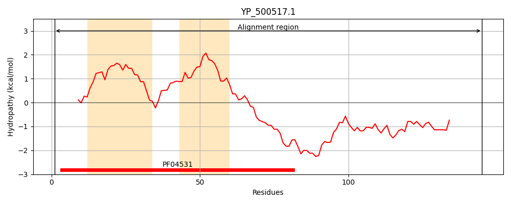
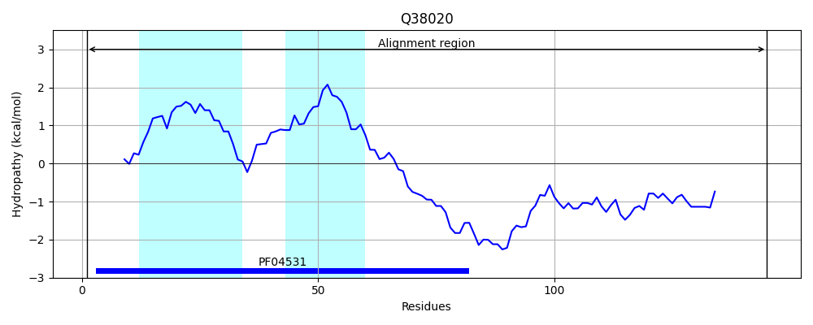
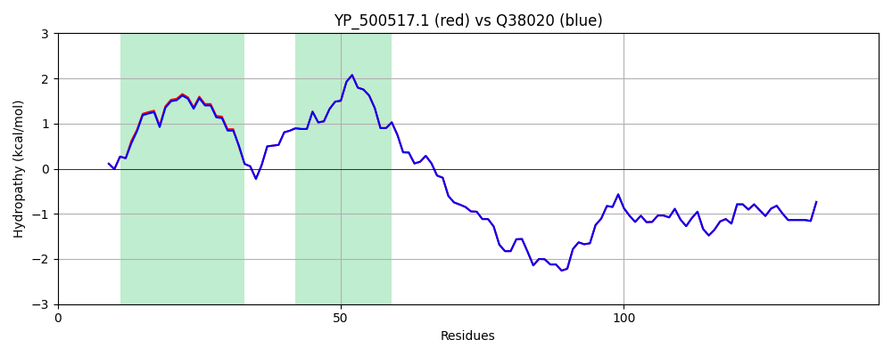

Hit Accession: Q38020
Hit TCID: 1.E.11.1.1
Hit Description: gnl|BL_ORD_ID|13390 gnl|TC-DB|Q38020|1.E.11.1.1 HOLIN - Bacteriophage phi-11, and bacteriophage 80 alpha.
Mach Len: 145
e:0.000000
Query TMS Count : 2
Hit TMS Count: 2
TMS-Overlap Score: 2.050000
Predicted Substrates:None
BLAST Alignment:
Score: 729 , Bit scores: 285 bits, E-value: 5.1e-101, Alignment length: 145, Percentage identity: 99
Query: 1 MDINWKLRFKNKAVLTGLVGALLLFIKQVTDLFGLDLSTQLNQASAIIGAILTLLTGIGVITDPTSKGVSDSSIAQTYQAPRDSKKEEQQVTWKSSQDSSLTPELSAKAPKEYDTSQPFTDASNDVGFDVNEYHHGGGDNASKIN 145
MDINWKLRFKNKAVLTGLVGAL +FIKQVTDLFGLDLSTQLNQASAIIGAILTLLTGIGVITDPTSKGVSDSSIAQTYQAPRDSKKEEQQVTWKSSQDSSLTPELSAKAPKEYDTSQPFTDASNDVGFDVNEYHHGGGDNASKIN
Sbjct: 1 MDINWKLRFKNKAVLTGLVGALFVFIKQVTDLFGLDLSTQLNQASAIIGAILTLLTGIGVITDPTSKGVSDSSIAQTYQAPRDSKKEEQQVTWKSSQDSSLTPELSAKAPKEYDTSQPFTDASNDVGFDVNEYHHGGGDNASKIN 145 | Protein Hydropathy Plots: |
|---|
|  |  |
Pairwise Alignment-Hydropathy Plot:
|
|---|
|  |